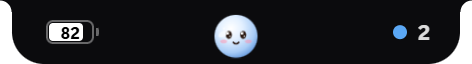
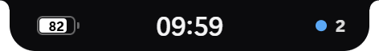
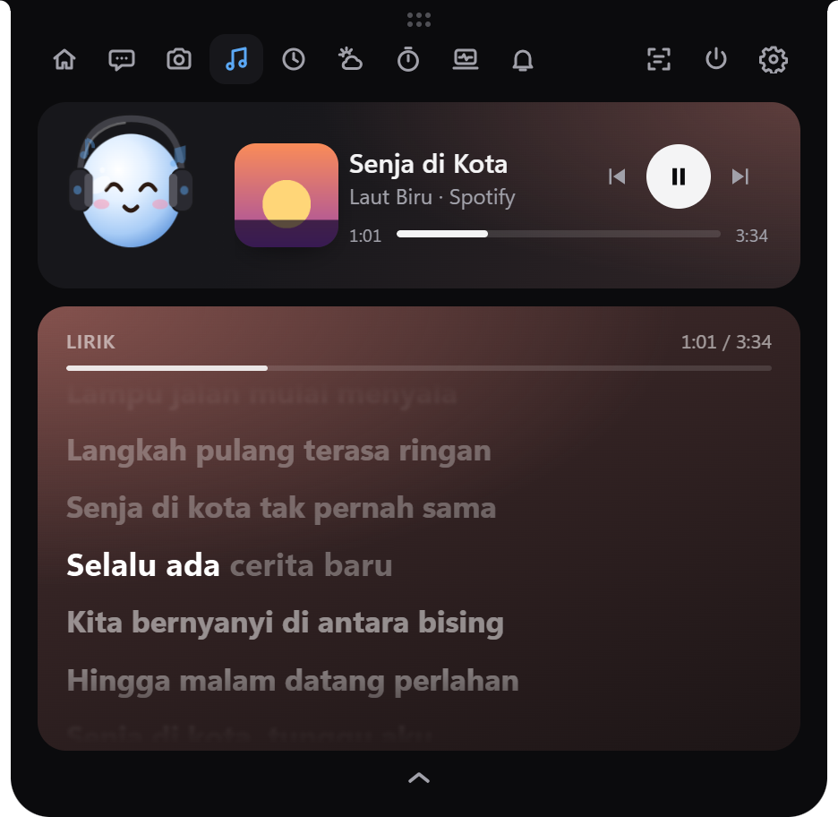
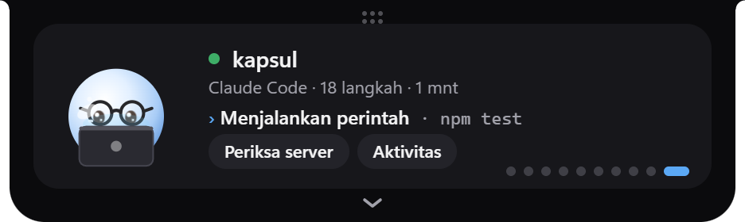
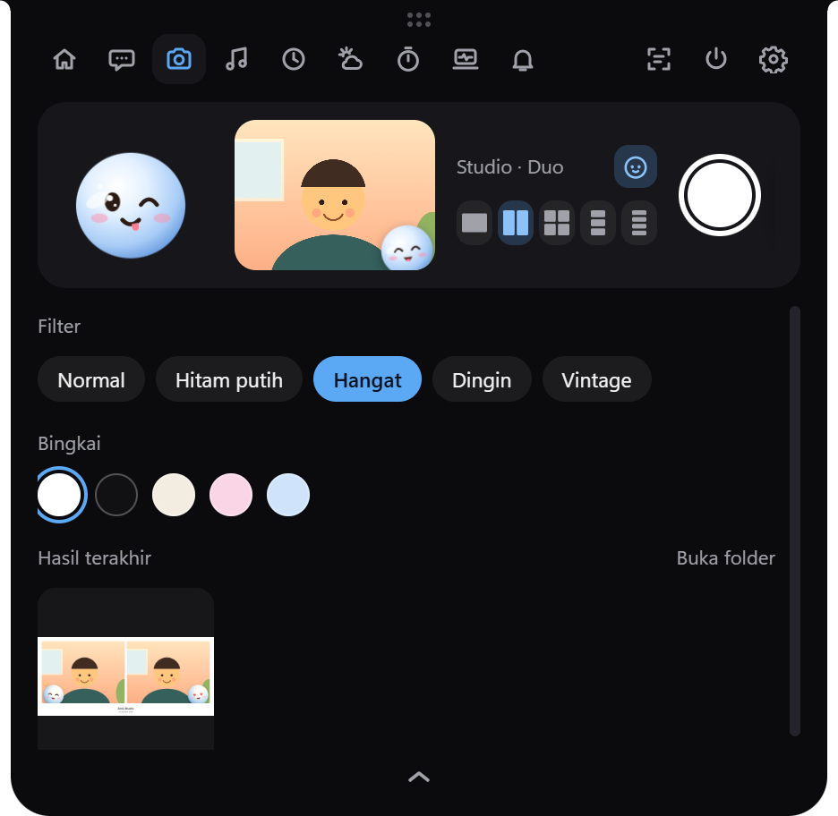
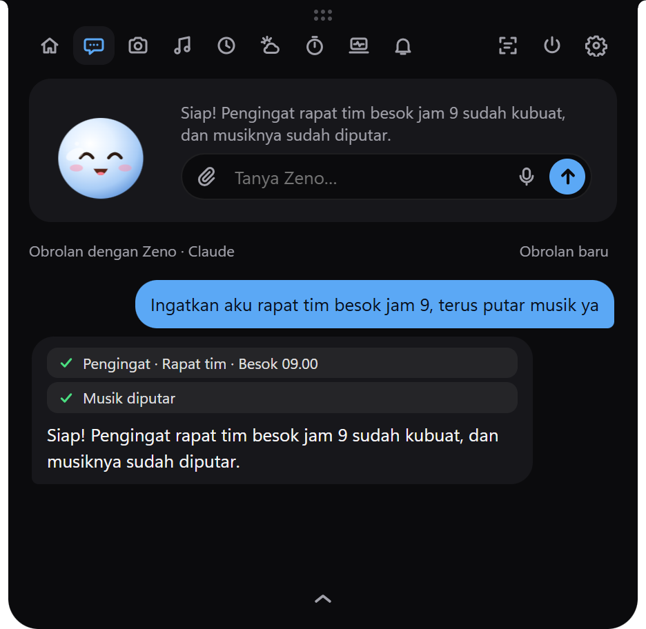
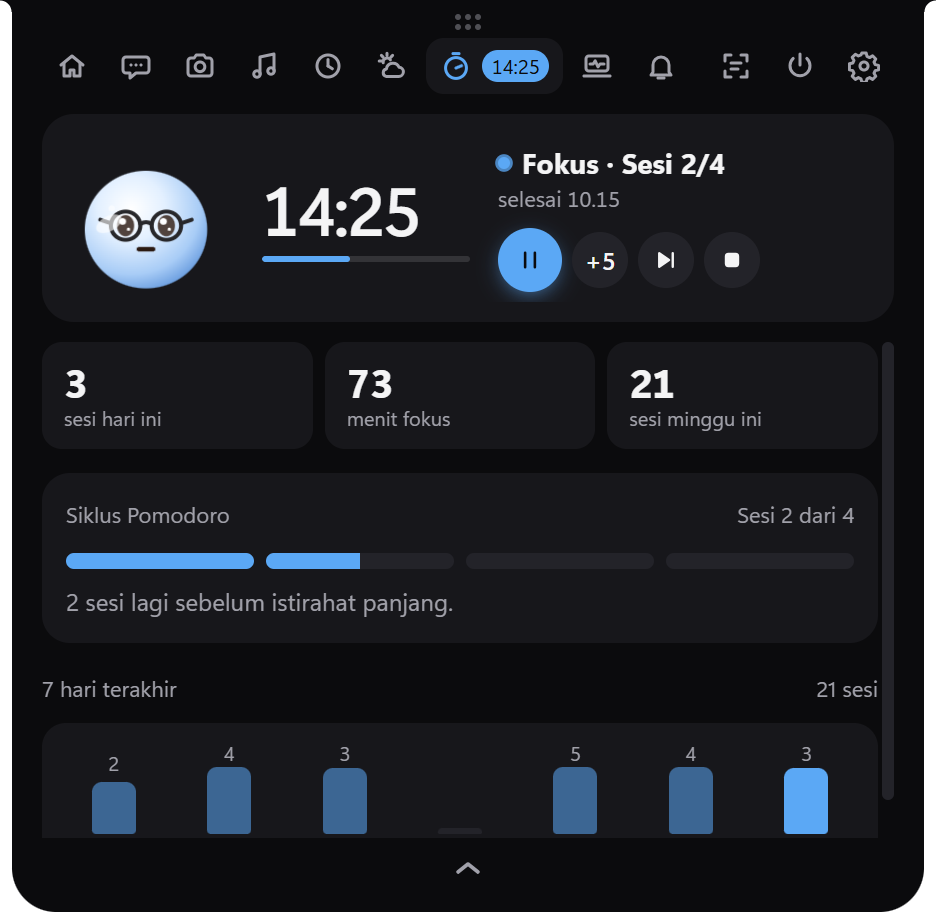
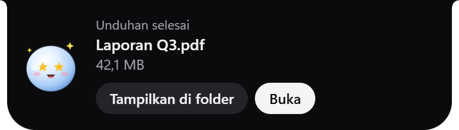
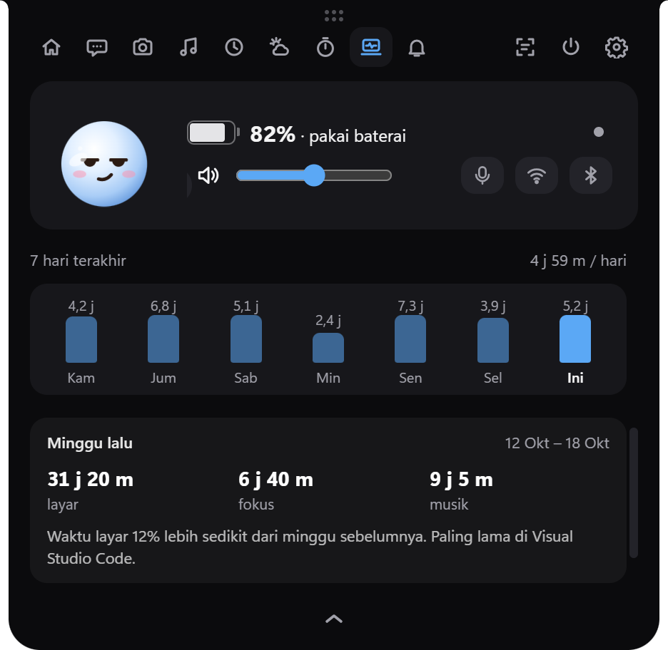

Kapsul yang tenang
Saat tidak ada apa-apa, Zeno diam di tengah dengan baterai, cuaca, dan notifikasi di kiri-kanan. Diam 30 detik, kapsul berubah jadi jam. Ada musik atau pekerjaan, Zeno pindah ke kiri dan statusnya muncul.


Zenopod menaruh jam, musik, notifikasi, dan Claude Code di kapsul kecil di atas layar, ditemani Zeno, maskot yang ikut bereaksi saat kamu bekerja.
Windows 10 & 11 (64-bit) · macOS 12+ · Memperbarui dirinya sendiri di Windows
Saat tidak ada apa-apa, Zeno diam di tengah dengan baterai, cuaca, dan notifikasi di kiri-kanan. Diam 30 detik, kapsul berubah jadi jam. Ada musik atau pekerjaan, Zeno pindah ke kiri dan statusnya muncul.


Spotify, YouTube di browser, dan pemutar lain. Lirik tersinkron terisi seperti karaoke dengan warna dari sampul album. Klik satu baris untuk melompat ke bagian itu.

Saat Claude bekerja, Zeno ikut mengetik di laptopnya. Status dan lama kerja tampil di kapsul, izin Claude bisa dijawab langsung, dan kartu Kerja merangkum server lokal serta perubahan Git.

Photobooth dari webcam dengan lima grid (Tunggal, Duo, 2×2, Strip 3, Strip 4), filter, dan warna bingkai. Zeno ikut berpose di setiap foto. Hasilnya disimpan di folder Gambar › Zenopod.


Minta Zeno membuat pengingat, menyalakan timer, membuka aplikasi, atau mengatur musik. Pakai Claude, ChatGPT, atau Gemini dengan API key-mu sendiri.

Hitung mundur besar dengan garis progres tipis, siklus Pomodoro, dan laporan fokus tujuh hari.

Durasi panggilan Zoom atau Teams dengan tombol bisukan mikrofon, titik privasi saat kamera atau mikrofon dipakai, dan kabar saat unduhan selesai.

Aplikasi yang paling lama kamu pakai hari ini, grafik tujuh hari, dan laporan setiap Senin pagi.
Juga ada: perintah suara offline, pengingat dan kalender, ambil teks dari layar, kebiasaan harian, statistik, kontrol cepat Windows, dan 16 kostum Zeno.
Zenopod-Setup-x.y.z.exe.arm64.dmg untuk Apple Silicon atau x64.dmg untuk Intel.| Windows | Windows 10 versi 1809 atau Windows 11, 64-bit |
|---|---|
| macOS | macOS 12 Monterey ke atas, Apple Silicon atau Intel |
| RAM | 4 GB (disarankan 8 GB) |
| Ruang disk | ±350 MB, ±600 MB dengan perintah suara |